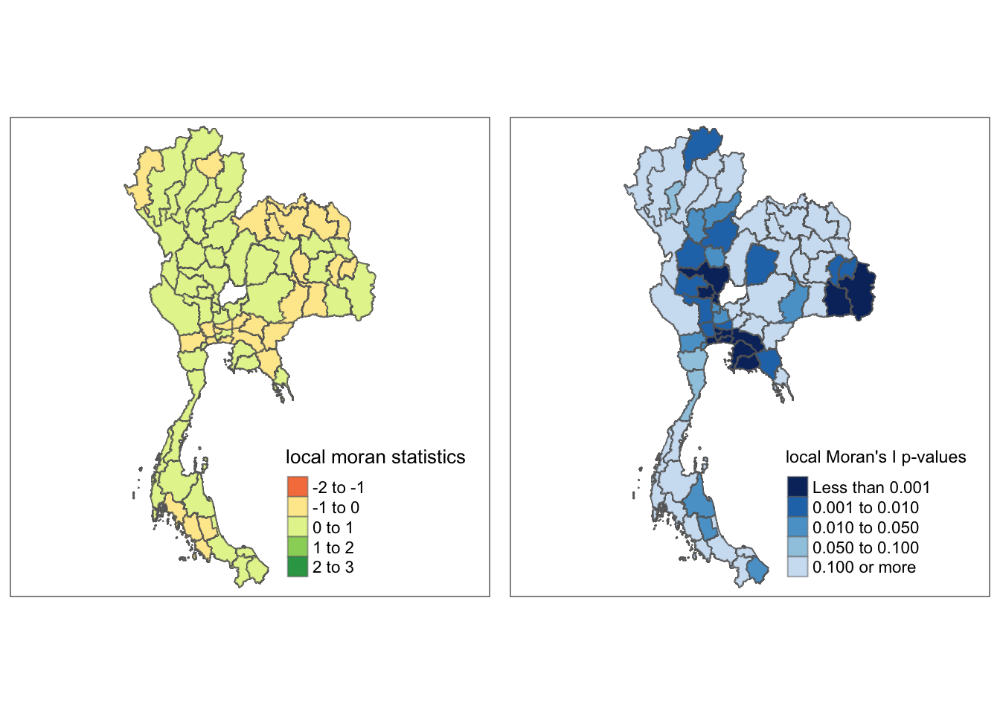
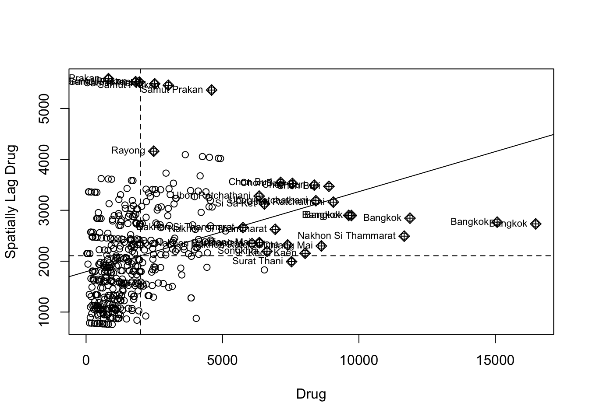
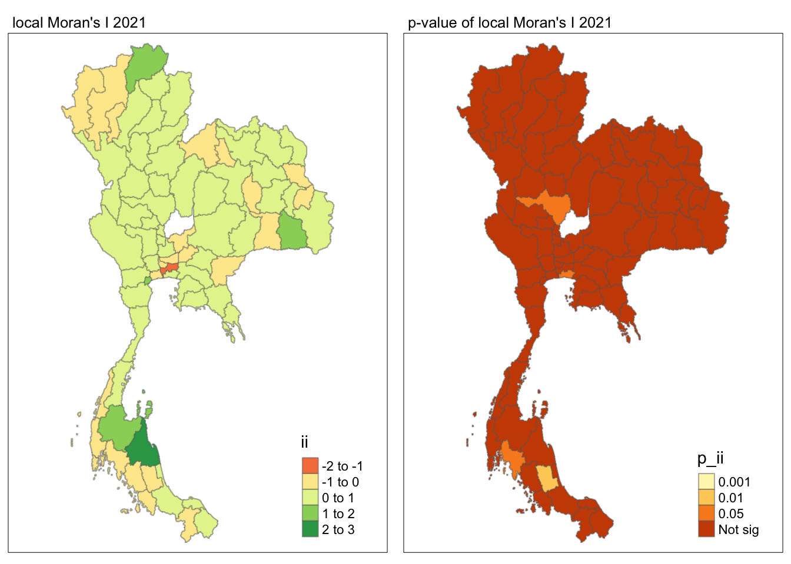

pacman::p_load(sf,spdep,tmap,tidyverse,dplyr)Take-home_Ex02
Take home exe2
Setting the Analytical Tools
Getting the data into R Environment
Import shapefile into r environment
Thailand_Map <- st_read(dsn = "data/tha_adm_rtsd_itos_20210121_shp", layer = "tha_admbnda_adm1_rtsd_20220121" )Reading layer `tha_admbnda_adm1_rtsd_20220121' from data source
`/Users/liangyuhang/Downloads/Maaaaaaaaaark/IS415_g/Take-home_Ex/Take-home_Ex02/data/tha_adm_rtsd_itos_20210121_shp'
using driver `ESRI Shapefile'
Simple feature collection with 77 features and 16 fields
Geometry type: MULTIPOLYGON
Dimension: XY
Bounding box: xmin: 97.34336 ymin: 5.613038 xmax: 105.637 ymax: 20.46507
Geodetic CRS: WGS 84Import. csv file into r environment
Thailand <- read_csv("data/archive/thai_drug_offenses_2017_2022.csv")Rows: 7392 Columns: 5
── Column specification ────────────────────────────────────────────────────────
Delimiter: ","
chr (3): types_of_drug_offenses, province_th, province_en
dbl (2): fiscal_year, no_cases
ℹ Use `spec()` to retrieve the full column specification for this data.
ℹ Specify the column types or set `show_col_types = FALSE` to quiet this message.data marning
left join the data
Thailand_Map_Drug <- left_join(Thailand_Map, Thailand, by = c("ADM1_EN" = "province_en"))%>%
select(3,17,18,19,21)flit the drug abuse data
unique(Thailand_Map_Drug$types_of_drug_offenses) [1] "drug_use_cases"
[2] "suspects_in_drug_use_cases"
[3] "possession_cases"
[4] "suspects_in_possession_cases"
[5] "possession_with_intent_to_distribute_cases"
[6] "suspects_in_possession_with_intent_to_distribute_cases"
[7] "trafficking_cases"
[8] "suspects_in_trafficking_cases"
[9] "production_cases"
[10] "suspects_in_production_cases"
[11] "import_cases"
[12] "suspects_in_import_cases"
[13] "export_cases"
[14] "suspects_in_export_cases"
[15] "conspiracy_cases"
[16] "suspects_in_conspiracy_cases"
[17] NA Thailand_Map_Drug <- subset(Thailand_Map_Drug, types_of_drug_offenses == "drug_use_cases")Visualising the data
equal <- tm_shape(Thailand_Map_Drug) +
tm_fill("no_cases",
n = 5,
style = "equal") +
tm_borders(alpha = 0.5) +
tm_layout(main.title = "interval classification",legend.width = 0.5)
quantile <- tm_shape(Thailand_Map_Drug) +
tm_fill("no_cases",
n = 5,
style = "quantile") +
tm_borders(alpha = 0.5) +
tm_layout(main.title = "quantile classification",legend.width = 0.5)
tmap_arrange(equal,
quantile)Global Measures of Spatial Autocorrelation
Computing Contiguity Spatial Weights
wm_q <- poly2nb(Thailand_Map_Drug,
queen=TRUE)Warning in poly2nb(Thailand_Map_Drug, queen = TRUE): neighbour object has 2 sub-graphs;
if this sub-graph count seems unexpected, try increasing the snap argument.summary(wm_q)Neighbour list object:
Number of regions: 450
Number of nonzero links: 14130
Percentage nonzero weights: 6.977778
Average number of links: 31.4
2 disjoint connected subgraphs
Link number distribution:
5 11 17 23 29 35 41 47 53 59
6 6 36 108 84 96 66 30 6 12
6 least connected regions:
6147 6148 6149 6150 6151 6152 with 5 links
12 most connected regions:
2499 2500 2501 2502 2503 2504 4611 4612 4613 4614 4615 4616 with 59 linksThe summary report above shows that there are 450 area units in Thailand. The most connected area unit has 12 neighbours. There are 6 area units with only 5 neighbours.
Row-standardised weights matrix
rswm_q <- nb2listw(wm_q,
style="W",
zero.policy = TRUE)
rswm_qCharacteristics of weights list object:
Neighbour list object:
Number of regions: 450
Number of nonzero links: 14130
Percentage nonzero weights: 6.977778
Average number of links: 31.4
2 disjoint connected subgraphs
Weights style: W
Weights constants summary:
n nn S0 S1 S2
W 450 202500 450 32.41275 1833.241Global Measures of Spatial Autocorrelation: Moran’s I
Maron’s I test
moran.test(Thailand_Map_Drug$no_cases,
listw=rswm_q,
zero.policy = TRUE,
na.action=na.omit)
Moran I test under randomisation
data: Thailand_Map_Drug$no_cases
weights: rswm_q
Moran I statistic standard deviate = 13.215, p-value < 2.2e-16
alternative hypothesis: greater
sample estimates:
Moran I statistic Expectation Variance
0.1573096432 -0.0022271715 0.0001457534 The p-value is extremely small, suggesting that the result is highly significant.Moran I statistic, indicating the degree of positive spatial autocorrelation under the given weights. A positive value suggests that high-value areas tend to cluster together.The alternative hypothesi is greater indicates the alternative hypothesis, focusing on positive autocorrelation, meaning that areas with a high number of cases are likely to be adjacent to other areas with a high number of cases.
Computing Monte Carlo Moran’s I
set.seed(1234)
bperm= moran.mc(Thailand_Map_Drug$no_cases,
listw=rswm_q,
nsim=999,
zero.policy = TRUE,
na.action=na.omit)
bperm
Monte-Carlo simulation of Moran I
data: Thailand_Map_Drug$no_cases
weights: rswm_q
number of simulations + 1: 1000
statistic = 0.15731, observed rank = 1000, p-value = 0.001
alternative hypothesis: greaterThe output indicates strong evidence of positive spatial autocorrelation in the case numbers across the regions in Thailand.And the output of the p-value mean that it is not generate by random. The observed Moran’s I value is significantly higher than what would be expected by chance, suggesting that regions with high case numbers are clustering together.
Visualising Monte Carlo Moran’s I
hist(bperm$res,
freq=TRUE,
breaks=20,
xlab="Simulated Moran's I")
abline(v=0.15731,
col="red") 
The histogram displays the distribution of simulated Moran’s I values, most of which are close to zero.As fot the observed Moran’s I (0.15731) is far greater than these simulated values, falling in the extreme right tail of the distribution, as shown in the histogram.The p-value (0.001) and the observed rank of 1000 indicate that this observed spatial autocorrelation is highly significant, confirming that drug use cases are spatially clustered in Thailand rather than randomly distributed.
Global Measures of Spatial Autocorrelation: Geary’s C
Geary’s C test
geary.test(Thailand_Map_Drug$no_cases, listw=rswm_q)
Geary C test under randomisation
data: Thailand_Map_Drug$no_cases
weights: rswm_q
Geary C statistic standard deviate = 4.0279, p-value = 2.814e-05
alternative hypothesis: Expectation greater than statistic
sample estimates:
Geary C statistic Expectation Variance
0.8915381430 1.0000000000 0.0007250873 The calculated Geary C statistic is 0.8915. This value is less than 1, indicating that the sample exhibits positive spatial autocorrelation, meaning that nearby areas tend to have similar case counts.The p-value is 2.814e-05 (or 0.00002814), which is very small and indicates that the result is statistically significant. Generally, if the p-value is less than 0.05, we can reject the null hypothesis, suggesting significant spatial autocorrelation exists.Overall, these results indicate that in the context of drug cases in Thailand, the spatial distribution of cases is not random but shows significant positive spatial autocorrelation.
Computing Monte Carlo Geary’s C
set.seed(1234)
bperm=geary.mc(Thailand_Map_Drug$no_cases,
listw=rswm_q,
nsim=999)
bperm
Monte-Carlo simulation of Geary C
data: Thailand_Map_Drug$no_cases
weights: rswm_q
number of simulations + 1: 1000
statistic = 0.89154, observed rank = 1, p-value = 0.001
alternative hypothesis: greaterThe calculated Geary C statistic is 0.89154. This value indicates positive spatial autocorrelation in the sample, meaning that nearby areas tend to have similar case counts.The p-value is 0.001, which is very small and indicates that the result is statistically significant. Overall, these results suggest that in the context of drug cases in Thailand, the spatial distribution of cases is not random but shows significant positive spatial autocorrelation.
Visualising the Monte Carlo Geary’s C
hist(bperm$res, freq=TRUE, breaks=20, xlab="Simulated Geary c")
abline(v=0.89154, col="red") 
The observed spatial autocorrelation is stronger than what would be expected by random chance. This suggests that the distribution of cases is not random, indicating a clustering effect in your data. Overall, this aligns with your previous analysis, highlighting the presence of important spatial influencing factors in your dataset.
Spatial Correlogram
Compute Moran’s I correlogram
MI_corr <- sp.correlogram(wm_q,
Thailand_Map_Drug$no_cases,
order=10,
method="I",
style="W",
zero.policy = TRUE)Warning in nblag(neighbours, maxlag = order): lag 1 neighbour object has 2
sub-graphsWarning in nblag(neighbours, maxlag = order): lag 2 neighbour object has 7
sub-graphsWarning in nblag(neighbours, maxlag = order): lag 3 neighbour object has 7
sub-graphsWarning in nblag(neighbours, maxlag = order): lag 4 neighbour object has 7
sub-graphsWarning in nblag(neighbours, maxlag = order): lag 5 neighbour object has 7
sub-graphsWarning in nblag(neighbours, maxlag = order): lag 6 neighbour object has 7
sub-graphsWarning in nblag(neighbours, maxlag = order): lag 7 neighbour object has 7
sub-graphsWarning in nblag(neighbours, maxlag = order): lag 8 neighbour object has 9
sub-graphsWarning in nblag(neighbours, maxlag = order): lag 9 neighbour object has 19
sub-graphsWarning in nblag(neighbours, maxlag = order): lag 10 neighbour object has 49
sub-graphsplot(MI_corr)Strong Autocorrelation Among First-Order Neighbors： The Moran’s I value for first-order neighbors (order = 1) is approximately 0.15 in the Correlogram. This suggests that there is a spatial clustering effect in certain areas where the number of drug offenses is high, indicating that high-case areas are located close to each other. Decreasing Autocorrelation with Increased Distance: As increase the order of neighbors (for example, to order = 5), the Moran’s I values in the Correlogram approach 0. This indicates that there is no significant spatial correlation among areas that are farther away from these clustered regions. In other words, as you move away from these high-case areas, the distribution of drug offenses becomes increasingly random.
print(MI_corr)Spatial correlogram for Thailand_Map_Drug$no_cases
method: Moran's I
estimate expectation variance standard deviate Pr(I) two sided
1 (450) 1.5731e-01 -2.2272e-03 1.4575e-04 13.2145 < 2.2e-16
2 (444) -4.0391e-02 -2.2573e-03 1.0508e-04 -3.7199 0.0001993
3 (444) -3.3936e-02 -2.2573e-03 8.5696e-05 -3.4221 0.0006214
4 (444) 1.7777e-02 -2.2573e-03 8.8783e-05 2.1263 0.0334809
5 (444) -1.2165e-02 -2.2573e-03 9.3793e-05 -1.0231 0.3062732
6 (444) -6.1258e-03 -2.2573e-03 1.1744e-04 -0.3570 0.7211180
7 (444) -4.9293e-02 -2.2573e-03 1.6343e-04 -3.6793 0.0002339
8 (444) 7.2810e-03 -2.2573e-03 2.0072e-04 0.6732 0.5007913
9 (438) -7.3029e-03 -2.2883e-03 2.2680e-04 -0.3330 0.7391557
10 (408) -5.2020e-03 -2.4570e-03 2.3266e-04 -0.1800 0.8571795
1 (450) ***
2 (444) ***
3 (444) ***
4 (444) *
5 (444)
6 (444)
7 (444) ***
8 (444)
9 (438)
10 (408)
---
Signif. codes: 0 '***' 0.001 '**' 0.01 '*' 0.05 '.' 0.1 ' ' 1Compute Geary’s C correlogram and plot
GC_corr <- sp.correlogram(wm_q,
Thailand_Map_Drug$no_cases,
order=10,
method="C",
style="W",
zero.policy = TRUE)Warning in nblag(neighbours, maxlag = order): lag 1 neighbour object has 2
sub-graphsWarning in nblag(neighbours, maxlag = order): lag 2 neighbour object has 7
sub-graphsWarning in nblag(neighbours, maxlag = order): lag 3 neighbour object has 7
sub-graphsWarning in nblag(neighbours, maxlag = order): lag 4 neighbour object has 7
sub-graphsWarning in nblag(neighbours, maxlag = order): lag 5 neighbour object has 7
sub-graphsWarning in nblag(neighbours, maxlag = order): lag 6 neighbour object has 7
sub-graphsWarning in nblag(neighbours, maxlag = order): lag 7 neighbour object has 7
sub-graphsWarning in nblag(neighbours, maxlag = order): lag 8 neighbour object has 9
sub-graphsWarning in nblag(neighbours, maxlag = order): lag 9 neighbour object has 19
sub-graphsWarning in nblag(neighbours, maxlag = order): lag 10 neighbour object has 49
sub-graphsplot(GC_corr)print(GC_corr)Spatial correlogram for Thailand_Map_Drug$no_cases
method: Geary's C
estimate expectation variance standard deviate Pr(I) two sided
1 (450) 0.89153814 1.00000000 0.00072509 -4.0279 5.627e-05 ***
2 (444) 1.09395639 1.00000000 0.00108188 2.8565 0.004283 **
3 (444) 0.97411571 1.00000000 0.00115702 -0.7610 0.446677
4 (444) 0.89941590 1.00000000 0.00227911 -2.1069 0.035125 *
5 (444) 0.98071039 1.00000000 0.00369355 -0.3174 0.750943
6 (444) 0.96120901 1.00000000 0.00620021 -0.4926 0.622268
7 (444) 1.02272331 1.00000000 0.01092993 0.2174 0.827934
8 (444) 1.04350655 1.00000000 0.01510478 0.3540 0.723342
9 (438) 1.00070260 1.00000000 0.01639252 0.0055 0.995622
10 (408) 0.83840972 1.00000000 0.01682899 -1.2456 0.212903
---
Signif. codes: 0 '***' 0.001 '**' 0.01 '*' 0.05 '.' 0.1 ' ' 1In Moran’s I results, the first-order neighbors show positive spatial autocorrelation. Similarly, the Geary’s C results indicate that there is positive spatial autocorrelation at smaller lags. Both indicate that drug abuse cases are spatially clustered in local areas.
Moran’s I approaches 0 as the lag number increases, which is consistent with the trend in Geary’s C, i.e., spatial autocorrelation weakens as the lag increases. This suggests that areas farther from the clustered regions tend to be distributed randomly, and both statistics point to an insignificant global spatial autocorrelation.
Local Indicators of Spatial Association(LISA)
Computing local Moran’s I
fips <- order(Thailand_Map_Drug$no_cases)
localMI <- localmoran(Thailand_Map_Drug$no_cases, rswm_q)
head(localMI) Ii E.Ii Var.Ii Z.Ii Pr(z != E(Ii))
1 2.0031708 -0.0518028694 0.490979386 2.932747 0.0033597734
2 2.5496777 -0.1114307739 0.989708320 2.674909 0.0074749594
3 2.4083949 -0.0907523063 0.824803860 2.751798 0.0059269124
4 1.6642394 -0.0317291756 0.307090542 3.060445 0.0022100831
5 1.6473179 -0.0309216368 0.299524380 3.066464 0.0021660691
6 0.1946443 -0.0003074004 0.003071721 3.517517 0.0004356039Mapping the local Moran’s I
Thailand.localMI <- cbind(Thailand_Map_Drug,localMI) %>%
rename(Pr.Ii = Pr.z....E.Ii..)Mapping both local Moran’s I values and p-values
localMI.map <- tm_shape(Thailand.localMI) +
tm_fill(col = "Ii",
style = "pretty",
title = "local moran statistics") +
tm_borders(alpha = 0.5)
pvalue.map <- tm_shape(Thailand.localMI) +
tm_fill(col = "Pr.Ii",
breaks=c(-Inf, 0.001, 0.01, 0.05, 0.1, Inf),
palette="-Blues",
title = "local Moran's I p-values") +
tm_borders(alpha = 0.5)
tmap_arrange(localMI.map, pvalue.map, asp=1, ncol=2)Variable(s) "Ii" contains positive and negative values, so midpoint is set to 0. Set midpoint = NA to show the full spectrum of the color palette.
The left map shows the strength and direction of spatial correlation (positive or negative), while the right map assesses whether these correlations are statistically significant. Areas with strong positive Moran’s I values (green zones) in the left map often correspond to dark blue regions in the right map, indicating significant “hot spots” of drug abuse. The areas with lower Moran’s I values (e.g., near zero or negative in the left map) are often associated with higher p-values in the right map, suggesting that the clustering in these areas is not statistically significant and could be due to random variation.
Creating a LISA Cluster Map
Plotting Moran scatterplot
nci <- moran.plot(Thailand_Map_Drug$no_cases, rswm_q,
labels=as.character(Thailand_Map_Drug$ADM1_EN),
xlab="Drug",
ylab="Spatially Lag Drug")
Plotting Moran scatterplot with standardised variable
Thailand_Map_Drug$Z.no_case <- scale(Thailand_Map_Drug$no_cases) %>%
as.vector plot the Moran scatterplot
nci2 <- moran.plot(Thailand_Map_Drug$Z.no_case, rswm_q,
labels=as.character(Thailand_Map_Drug$ADM1_EN),
xlab="Z-drug",
ylab="Spatially Lag z-drug")Top-right quadrant (High-High): Regions in this quadrant (like Bangkok) have high values of drug use cases and are surrounded by neighboring regions that also have high values. This suggests positive spatial autocorrelation (clusters of high drug use). Bottom-left quadrant (Low-Low): Regions here have low values and are surrounded by regions with low values, indicating similar positive spatial autocorrelation for areas with low drug use. Top-left quadrant (Low-High): These regions have low drug use cases but are surrounded by areas with high cases. This suggests negative spatial autocorrelation (disparities between neighboring regions). Bottom-right quadrant (High-Low): These regions have high drug use cases but are surrounded by areas with low cases, also indicating negative spatial autocorrelation. Regions labeled: Some regions, such as Bangkok, Samut Prakan, and Nonthaburi, are labeled in the plot because they show distinct spatial patterns. Bangkok, for instance, appears in the top-right quadrant, meaning it has a high number of cases and is surrounded by other regions with high values.
Preparing LISA map classes
quadrant <- vector(mode="numeric",length=nrow(localMI))Thailand_Map_Drug$lag_GDPPC <- lag.listw(rswm_q, Thailand_Map_Drug$no_cases)
DV <- Thailand_Map_Drug$lag_GDPPC - mean(Thailand_Map_Drug$lag_GDPPC) LM_I <- localMI[,1] - mean(localMI[,1]) signif <- 0.05 quadrant[DV <0 & LM_I>0] <- 1
quadrant[DV >0 & LM_I<0] <- 2
quadrant[DV <0 & LM_I<0] <- 3
quadrant[DV >0 & LM_I>0] <- 4 quadrant[localMI[,5]>signif] <- 0quadrant <- vector(mode="numeric",length=nrow(localMI))
Thailand_Map_Drug$lag_GDPPC <- lag.listw(rswm_q, Thailand_Map_Drug$no_cases)
DV <- Thailand_Map_Drug$lag_GDPPC - mean(Thailand_Map_Drug$lag_GDPPC)
LM_I <- localMI[,1]
signif <- 0.05
quadrant[DV <0 & LM_I>0] <- 1
quadrant[DV >0 & LM_I<0] <- 2
quadrant[DV <0 & LM_I<0] <- 3
quadrant[DV >0 & LM_I>0] <- 4
quadrant[localMI[,5]>signif] <- 0plot it
Thailand_Map_Drug <- Thailand_Map_Drug %>%
mutate(cases_group = cut(no_cases,
breaks = seq(0, max(no_cases, na.rm = TRUE), by = 1000),
include.lowest = TRUE,
right = FALSE))
no_cases_map <- qtm(Thailand_Map_Drug, "cases_group")Thailand.localMI$quadrant <- quadrant
colors <- c("#ffffff", "#2c7bb6", "#abd9e9", "#fdae61", "#d7191c")
clusters <- c("insignificant", "low-low", "low-high", "high-low", "high-high")
LISAmap <- tm_shape(Thailand.localMI) +
tm_fill(col = "quadrant",
style = "cat",
palette = colors[c(sort(unique(quadrant)))+1],
labels = clusters[c(sort(unique(quadrant)))+1],
popup.vars = c("")) +
tm_view(set.zoom.limits = c(11,17)) +
tm_borders(alpha=0.5)
tmap_arrange(no_cases_map, LISAmap,
asp=1, ncol=2)Hot Spot and Cold Spot Area Analysis
Deriving distance-based weight matrix
Deriving the centroid
longitude <- map_dbl(Thailand_Map_Drug$geometry, ~st_centroid(.x)[[1]])latitude <- map_dbl(Thailand_Map_Drug$geometry, ~st_centroid(.x)[[2]])coords <- cbind(longitude, latitude)Determine the cut-off distance
dealing with the point
coords_unique <- unique(coords)#coords <- coordinates(hunan)
k1 <- knn2nb(knearneigh(coords_unique, k = 5)) # Increase k as needed
k1dists <- unlist(nbdists(k1, coords_unique, longlat = TRUE))
summary(k1dists) Min. 1st Qu. Median Mean 3rd Qu. Max.
21.55 66.62 89.67 96.47 121.44 234.82 The fact that the mean distance (96.47) is higher than the median distance (89.67) suggests a right-skewed distribution, meaning that while many points are close to each other, there are some outliers that are significantly further apart.
Computing fixed distance weight matrix
wm_d234 <- dnearneigh(coords, 0, 234, longlat = TRUE)
wm_d234Neighbour list object:
Number of regions: 450
Number of nonzero links: 44514
Percentage nonzero weights: 21.98222
Average number of links: 98.92 Next, nb2listw() is used to convert the nb object into spatial weights object.
wm234_lw <- nb2listw(wm_d234, style = 'B')
summary(wm234_lw)Characteristics of weights list object:
Neighbour list object:
Number of regions: 450
Number of nonzero links: 44514
Percentage nonzero weights: 21.98222
Average number of links: 98.92
Link number distribution:
29 35 41 47 53 59 65 71 77 83 89 95 101 107 113 119 125 131 137 143
6 12 24 6 30 36 18 24 36 12 12 24 18 12 18 12 18 6 18 24
149 155 161 167 173
24 12 18 12 18
6 least connected regions:
445 446 447 448 449 450 with 29 links
18 most connected regions:
31 32 33 34 35 36 49 50 51 52 53 54 91 92 93 94 95 96 with 173 links
Weights style: B
Weights constants summary:
n nn S0 S1 S2
B 450 202500 44514 89028 20729736Computing adaptive distance weight matrix
knn <- knn2nb(knearneigh(coords, k=8))Warning in knearneigh(coords, k = 8): knearneigh: identical points foundWarning in knearneigh(coords, k = 8): knearneigh: kd_tree not available for
identical pointsWarning in knn2nb(knearneigh(coords, k = 8)): neighbour object has 19
sub-graphsknnNeighbour list object:
Number of regions: 450
Number of nonzero links: 3600
Percentage nonzero weights: 1.777778
Average number of links: 8
19 disjoint connected subgraphs
Non-symmetric neighbours listconvert the nb object into spatial weights object.
knn_lw <- nb2listw(knn, style = 'B')
summary(knn_lw)Characteristics of weights list object:
Neighbour list object:
Number of regions: 450
Number of nonzero links: 3600
Percentage nonzero weights: 1.777778
Average number of links: 8
19 disjoint connected subgraphs
Non-symmetric neighbours list
Link number distribution:
8
450
450 least connected regions:
1 2 3 4 5 6 7 8 9 10 11 12 13 14 15 16 17 18 19 20 21 22 23 24 25 26 27 28 29 30 31 32 33 34 35 36 37 38 39 40 41 42 43 44 45 46 47 48 49 50 51 52 53 54 55 56 57 58 59 60 61 62 63 64 65 66 67 68 69 70 71 72 73 74 75 76 77 78 79 80 81 82 83 84 85 86 87 88 89 90 91 92 93 94 95 96 97 98 99 100 101 102 103 104 105 106 107 108 109 110 111 112 113 114 115 116 117 118 119 120 121 122 123 124 125 126 127 128 129 130 131 132 133 134 135 136 137 138 139 140 141 142 143 144 145 146 147 148 149 150 151 152 153 154 155 156 157 158 159 160 161 162 163 164 165 166 167 168 169 170 171 172 173 174 175 176 177 178 179 180 181 182 183 184 185 186 187 188 189 190 191 192 193 194 195 196 197 198 199 200 201 202 203 204 205 206 207 208 209 210 211 212 213 214 215 216 217 218 219 220 221 222 223 224 225 226 227 228 229 230 231 232 233 234 235 236 237 238 239 240 241 242 243 244 245 246 247 248 249 250 251 252 253 254 255 256 257 258 259 260 261 262 263 264 265 266 267 268 269 270 271 272 273 274 275 276 277 278 279 280 281 282 283 284 285 286 287 288 289 290 291 292 293 294 295 296 297 298 299 300 301 302 303 304 305 306 307 308 309 310 311 312 313 314 315 316 317 318 319 320 321 322 323 324 325 326 327 328 329 330 331 332 333 334 335 336 337 338 339 340 341 342 343 344 345 346 347 348 349 350 351 352 353 354 355 356 357 358 359 360 361 362 363 364 365 366 367 368 369 370 371 372 373 374 375 376 377 378 379 380 381 382 383 384 385 386 387 388 389 390 391 392 393 394 395 396 397 398 399 400 401 402 403 404 405 406 407 408 409 410 411 412 413 414 415 416 417 418 419 420 421 422 423 424 425 426 427 428 429 430 431 432 433 434 435 436 437 438 439 440 441 442 443 444 445 446 447 448 449 450 with 8 links
450 most connected regions:
1 2 3 4 5 6 7 8 9 10 11 12 13 14 15 16 17 18 19 20 21 22 23 24 25 26 27 28 29 30 31 32 33 34 35 36 37 38 39 40 41 42 43 44 45 46 47 48 49 50 51 52 53 54 55 56 57 58 59 60 61 62 63 64 65 66 67 68 69 70 71 72 73 74 75 76 77 78 79 80 81 82 83 84 85 86 87 88 89 90 91 92 93 94 95 96 97 98 99 100 101 102 103 104 105 106 107 108 109 110 111 112 113 114 115 116 117 118 119 120 121 122 123 124 125 126 127 128 129 130 131 132 133 134 135 136 137 138 139 140 141 142 143 144 145 146 147 148 149 150 151 152 153 154 155 156 157 158 159 160 161 162 163 164 165 166 167 168 169 170 171 172 173 174 175 176 177 178 179 180 181 182 183 184 185 186 187 188 189 190 191 192 193 194 195 196 197 198 199 200 201 202 203 204 205 206 207 208 209 210 211 212 213 214 215 216 217 218 219 220 221 222 223 224 225 226 227 228 229 230 231 232 233 234 235 236 237 238 239 240 241 242 243 244 245 246 247 248 249 250 251 252 253 254 255 256 257 258 259 260 261 262 263 264 265 266 267 268 269 270 271 272 273 274 275 276 277 278 279 280 281 282 283 284 285 286 287 288 289 290 291 292 293 294 295 296 297 298 299 300 301 302 303 304 305 306 307 308 309 310 311 312 313 314 315 316 317 318 319 320 321 322 323 324 325 326 327 328 329 330 331 332 333 334 335 336 337 338 339 340 341 342 343 344 345 346 347 348 349 350 351 352 353 354 355 356 357 358 359 360 361 362 363 364 365 366 367 368 369 370 371 372 373 374 375 376 377 378 379 380 381 382 383 384 385 386 387 388 389 390 391 392 393 394 395 396 397 398 399 400 401 402 403 404 405 406 407 408 409 410 411 412 413 414 415 416 417 418 419 420 421 422 423 424 425 426 427 428 429 430 431 432 433 434 435 436 437 438 439 440 441 442 443 444 445 446 447 448 449 450 with 8 links
Weights style: B
Weights constants summary:
n nn S0 S1 S2
B 450 202500 3600 6192 124650Computing Gi statistics
Gi statistics using fixed distance
fips <- order(Thailand_Map_Drug$ADM1_EN)
gi.fixed <- localG(Thailand_Map_Drug$no_cases, wm234_lw)
gi.fixed [1] 0.23322051 0.09055737 0.13509138 0.29788819 0.30085669 0.50751370
[7] 1.31378150 1.24203092 1.19206479 1.28081615 1.25809065 1.27633622
[13] 0.57546927 0.54109444 0.53930572 0.56351026 0.49388083 0.56749098
[19] 0.93619836 0.89213436 0.85527305 0.91226483 0.89454858 0.89925799
[25] 0.78426009 0.76161005 0.72125366 0.74288442 0.74225498 0.75632516
[31] 0.52889431 0.51556294 0.51565121 0.52254473 0.51276935 0.51191714
[37] -0.19580800 -0.20398058 -0.20933223 -0.20121632 -0.21233603 -0.20668588
[43] -1.48032435 -1.48686166 -1.50276721 -1.49873325 -1.49697461 -1.49263405
[49] 1.11611871 1.09933040 1.09292613 1.09587150 1.08513082 1.09304501
[55] 1.34371292 1.25155144 1.19852631 1.21443526 1.23849203 1.38437222
[61] 1.45927970 1.43695484 1.42786182 1.41360757 1.41640081 1.50115802
[67] 4.32462541 4.30070439 4.29131115 4.29374023 4.27172263 4.31645859
[73] 2.46024127 2.43727501 2.42376694 2.41836178 2.41133862 2.44844300
[79] 1.54945293 1.56028001 1.55254630 1.54309622 1.49966771 1.58310452
[85] 2.09457885 2.08654887 2.09444721 2.08968734 2.07742084 2.11705286
[91] 1.18025233 1.17359901 1.17495056 1.18480501 1.14532061 1.18427208
[97] 3.50167368 3.49998130 3.49508406 3.51255080 3.48205499 3.52625568
[103] 2.91900725 2.82389638 2.74626896 2.91087534 2.78126447 2.86677518
[109] 1.70707308 1.64387030 1.59159957 1.70963218 1.54672111 1.67708484
[115] 3.67113119 3.57793613 3.53122307 3.69257024 3.60099922 3.67836180
[121] 2.47098146 2.41669882 2.34453198 2.53563220 2.23589878 2.41595169
[127] 2.15343068 2.03778205 1.91801933 2.18735904 1.88182149 2.23582265
[133] 2.68946907 2.66873954 2.63301900 2.67924250 2.55837956 2.66777042
[139] -2.17675807 -2.25218823 -2.30260246 -2.19466056 -2.30714942 -2.21369929
[145] 1.88379207 1.86763112 1.83579085 1.93170806 1.81645646 1.90026136
[151] -1.33521251 -1.33642497 -1.33512271 -1.33993020 -1.38357543 -1.36802095
[157] 0.49946229 0.46939648 0.46311141 0.45230652 0.27237818 0.43711826
[163] -0.16179975 -0.16835293 -0.17693050 -0.21743108 -0.45442996 -0.35085295
[169] -1.86299542 -1.87020836 -1.86709539 -1.87094408 -1.94405951 -1.94006374
[175] -0.74851352 -0.76999912 -0.77159492 -0.75871866 -0.86244759 -0.77395962
[181] 2.50221757 2.48823157 2.48245343 2.48241368 2.42493325 2.44157143
[187] 2.98368140 2.97376400 2.95949632 2.93439468 2.84038274 2.88731858
[193] 2.09626917 2.08789969 2.08245821 2.04530652 1.94732105 1.96214831
[199] -0.29236774 -0.29332406 -0.29272006 -0.31563033 -0.40661291 -0.39647703
[205] -0.09593077 -0.07472249 -0.07716161 -0.10764806 -0.17784442 -0.18735521
[211] 2.51932121 2.48259665 2.48665419 2.45293123 2.40443649 2.50209964
[217] -0.14995776 -0.22411500 -0.32477955 -0.32506419 -0.45562794 -0.19886624
[223] -0.65803077 -0.67315309 -0.70096241 -0.70247684 -0.76339789 -0.71278377
[229] -0.67964281 -0.70889157 -0.73598278 -0.73233015 -0.76538661 -0.71875283
[235] -2.32300259 -2.34321483 -2.35639300 -2.34886721 -2.39043460 -2.36725169
[241] -1.28674292 -1.29774328 -1.30748712 -1.31183790 -1.35527400 -1.27587196
[247] 0.42864967 0.41259417 0.37449945 0.36043008 0.29533420 0.36610918
[253] 0.30389066 0.28439081 0.26118463 0.25319871 0.18454786 0.26023800
[259] 1.35538146 1.30263641 1.24321053 1.20902410 1.13468445 1.33610513
[265] 1.73383414 1.73487325 1.73301784 1.73279523 1.70917869 1.72567689
[271] -2.20463218 -2.22001257 -2.22812547 -2.23732325 -2.24747223 -2.23494183
[277] -3.12293510 -3.12889319 -3.14895913 -3.13471223 -3.13118222 -3.12763930
[283] -4.78409674 -4.81348122 -4.85265140 -4.81091609 -4.79585406 -4.78820018
[289] -2.28970975 -2.34439454 -2.35171249 -2.31160885 -2.29663924 -2.27426285
[295] -2.24570003 -2.25823599 -2.28369323 -2.27795786 -2.27550613 -2.25543229
[301] -3.65641965 -3.68338366 -3.70650065 -3.71608683 -3.69268456 -3.66224771
[307] -5.54805340 -5.57977594 -5.57622976 -5.57457316 -5.57867349 -5.55903848
[313] -4.01834011 -4.05301924 -4.03905767 -4.02413066 -4.07744737 -4.03761516
[319] 0.47396037 0.42020337 0.41996317 0.47437590 0.51084456 0.47319867
[325] -2.24758640 -2.27821601 -2.27371515 -2.24544813 -2.24237470 -2.25143828
[331] -0.87138998 -0.89072814 -0.89501135 -0.87818386 -0.87280513 -0.88121677
[337] 0.16158448 0.13203700 0.13589999 0.15643735 0.17188535 0.15741279
[343] -0.02624946 -0.03283562 -0.03036602 -0.03071431 -0.02314570 -0.02362080
[349] 0.54376719 0.53859380 0.53525443 0.54193628 0.54619814 0.53922687
[355] 1.92935592 1.91060594 1.90522652 1.90046925 1.90591308 1.91433791
[361] 3.88367448 3.86035147 3.86007407 3.86201698 3.84682107 3.86085092
[367] 0.06178089 -0.05030748 -0.11699458 -0.18380625 -0.45835481 -0.01351548
[373] 0.51885484 0.51509671 0.50031741 0.48252822 0.43288019 0.51998855
[379] -0.53151070 -0.55598499 -0.57942712 -0.60208867 -0.63728114 -0.55161245
[385] -0.43274439 -0.46670211 -0.50089777 -0.52059253 -0.67040045 -0.43449446
[391] -0.62905457 -0.67270432 -0.70116874 -0.76079116 -0.99890624 -0.68992440
[397] 0.28117649 0.27505663 0.25350675 0.22594524 0.17199130 0.26093014
[403] 0.68365452 0.66685486 0.64292488 0.61110398 0.53065198 0.61974726
[409] -0.35235078 -0.47163230 -0.49996026 -0.50268943 -0.66682773 -0.60003040
[415] -0.52508076 -0.56983504 -0.58157813 -0.57001199 -0.60095926 -0.54196536
[421] 0.68189565 0.66038905 0.62775041 0.65327129 0.62556256 0.67458215
[427] 0.06057822 0.05358257 0.06236942 0.05699622 0.01130474 0.03042479
[433] -1.52542572 -1.53309031 -1.53466725 -1.54026106 -1.58871926 -1.60087237
[439] -1.33106492 -1.33854531 -1.33332407 -1.33901301 -1.36570688 -1.35797251
[445] -0.73405544 -0.85845226 -0.80004505 -0.77521321 -0.80100402 -0.77982905
attr(,"internals")
Gi E(Gi) V(Gi) Z(Gi) Pr(z != E(Gi))
[1,] 0.36392393 0.35857461 0.0005260935 0.23322051 8.155902e-01
[2,] 0.36059585 0.35857461 0.0004981824 0.09055737 9.278443e-01
[3,] 0.36161985 0.35857461 0.0005081444 0.13509138 8.925396e-01
[4,] 0.36546244 0.35857461 0.0005346354 0.29788819 7.657885e-01
[5,] 0.36553320 0.35857461 0.0005349619 0.30085669 7.635238e-01
[6,] 0.37040544 0.35857461 0.0005434187 0.50751370 6.117944e-01
[7,] 0.36184739 0.33184855 0.0005213898 1.31378150 1.889197e-01
[8,] 0.36028119 0.33184855 0.0005240459 1.24203092 2.142252e-01
[9,] 0.35914401 0.33184855 0.0005243015 1.19206479 2.332358e-01
[10,] 0.36113766 0.33184855 0.0005229242 1.28081615 2.002582e-01
[11,] 0.36063863 0.33184855 0.0005236748 1.25809065 2.083590e-01
[12,] 0.36103992 0.33184855 0.0005230926 1.27633622 2.018367e-01
[13,] 0.37195131 0.35857461 0.0005403231 0.57546927 5.649740e-01
[14,] 0.37117441 0.35857461 0.0005422268 0.54109444 5.884425e-01
[15,] 0.37113369 0.35857461 0.0005423072 0.53930572 5.896759e-01
[16,] 0.37168227 0.35857461 0.0005410619 0.56351026 5.730875e-01
[17,] 0.37009070 0.35857461 0.0005437079 0.49388083 6.213903e-01
[18,] 0.37177198 0.35857461 0.0005408250 0.56749098 5.703807e-01
[19,] 0.36678106 0.34521158 0.0005308153 0.93619836 3.491711e-01
[20,] 0.36581025 0.34521158 0.0005331110 0.89213436 3.723209e-01
[21,] 0.36497991 0.34521158 0.0005342324 0.85527305 3.924000e-01
[22,] 0.36625678 0.34521158 0.0005321869 0.91226483 3.616293e-01
[23,] 0.36586406 0.34521158 0.0005330115 0.89454858 3.710284e-01
[24,] 0.36596883 0.34521158 0.0005328085 0.89925799 3.685153e-01
[25,] 0.39030361 0.37193764 0.0005484130 0.78426009 4.328875e-01
[26,] 0.38979681 0.37193764 0.0005498664 0.76161005 4.462928e-01
[27,] 0.38887834 0.37193764 0.0005516790 0.72125366 4.707535e-01
[28,] 0.38937303 0.37193764 0.0005508343 0.74288442 4.575517e-01
[29,] 0.38935871 0.37193764 0.0005508630 0.74225498 4.579329e-01
[30,] 0.38967764 0.37193764 0.0005501614 0.75632516 4.494543e-01
[31,] 0.39776786 0.38530067 0.0005556472 0.52889431 5.968788e-01
[32,] 0.39746429 0.38530067 0.0005566248 0.51556294 6.061597e-01
[33,] 0.39746631 0.38530067 0.0005566187 0.51565121 6.060980e-01
[34,] 0.39762350 0.38530067 0.0005561271 0.52254473 6.012911e-01
[35,] 0.39740045 0.38530067 0.0005568151 0.51276935 6.081127e-01
[36,] 0.39738096 0.38530067 0.0005568722 0.51191714 6.087090e-01
[37,] 0.36735451 0.37193764 0.0005478514 -0.19580800 8.447604e-01
[38,] 0.36716055 0.37193764 0.0005484648 -0.20398058 8.383687e-01
[39,] 0.36703353 0.37193764 0.0005488428 -0.20933223 8.341889e-01
[40,] 0.36722616 0.37193764 0.0005482622 -0.20121632 8.405294e-01
[41,] 0.36696224 0.37193764 0.0005490467 -0.21233603 8.318449e-01
[42,] 0.36709634 0.37193764 0.0005486582 -0.20668588 8.362552e-01
[43,] 0.32418867 0.35857461 0.0005395702 -1.48032435 1.387867e-01
[44,] 0.32402141 0.35857461 0.0005400519 -1.48686166 1.370514e-01
[45,] 0.32361797 0.35857461 0.0005410981 -1.50276721 1.328991e-01
[46,] 0.32371981 0.35857461 0.0005408494 -1.49873325 1.339428e-01
[47,] 0.32376432 0.35857461 0.0005407375 -1.49697461 1.343999e-01
[48,] 0.32387441 0.35857461 0.0005404521 -1.49263405 1.355330e-01
[49,] 0.41160232 0.38530067 0.0005553227 1.11611871 2.643713e-01
[50,] 0.41123554 0.38530067 0.0005565595 1.09933040 2.716240e-01
[51,] 0.41109434 0.38530067 0.0005569867 1.09292613 2.744262e-01
[52,] 0.41115937 0.38530067 0.0005567934 1.09587150 2.731350e-01
[53,] 0.41092153 0.38530067 0.0005574725 1.08513082 2.778637e-01
[54,] 0.41109697 0.38530067 0.0005569790 1.09304501 2.743740e-01
[55,] 0.34892946 0.31848552 0.0005133204 1.34371292 1.790412e-01
[56,] 0.34677127 0.31848552 0.0005107846 1.25155144 2.107334e-01
[57,] 0.34547065 0.31848552 0.0005069368 1.19852631 2.307122e-01
[58,] 0.34586528 0.31848552 0.0005082886 1.21443526 2.245816e-01
[59,] 0.34645486 0.31848552 0.0005100091 1.23849203 2.155337e-01
[60,] 0.34983934 0.31848552 0.0005129501 1.38437222 1.662445e-01
[61,] 0.31020234 0.27839644 0.0004750490 1.45927970 1.444881e-01
[62,] 0.30971730 0.27839644 0.0004750959 1.43695484 1.507308e-01
[63,] 0.30951784 0.27839644 0.0004750572 1.42786182 1.533316e-01
[64,] 0.30920294 0.27839644 0.0004749273 1.41360757 1.574772e-01
[65,] 0.30926486 0.27839644 0.0004749595 1.41640081 1.566582e-01
[66,] 0.31109418 0.27839644 0.0004744414 1.50115802 1.333147e-01
[67,] 0.29726410 0.21158129 0.0003925458 4.32462541 1.527913e-05
[68,] 0.29685618 0.21158129 0.0003931544 4.30070439 1.702561e-05
[69,] 0.29669288 0.21158129 0.0003933665 4.29131115 1.776212e-05
[70,] 0.29673528 0.21158129 0.0003933132 4.29374023 1.756880e-05
[71,] 0.29634640 0.21158129 0.0003937569 4.27172263 1.939687e-05
[72,] 0.29712609 0.21158129 0.0003927643 4.31645859 1.585524e-05
[73,] 0.12564725 0.09131403 0.0001947483 2.46024127 1.388436e-02
[74,] 0.12534695 0.09131403 0.0001949796 2.43727501 1.479842e-02
[75,] 0.12516940 0.09131403 0.0001951072 2.42376694 1.536046e-02
[76,] 0.12509816 0.09131403 0.0001951564 2.41836178 1.559057e-02
[77,] 0.12500544 0.09131403 0.0001952189 2.41133862 1.589408e-02
[78,] 0.12549323 0.09131403 0.0001948694 2.44844300 1.434751e-02
[79,] 0.36730671 0.33184855 0.0005236915 1.54945293 1.212729e-01
[80,] 0.36754348 0.33184855 0.0005233689 1.56028001 1.186937e-01
[81,] 0.36737458 0.33184855 0.0005236054 1.55254630 1.205316e-01
[82,] 0.36716668 0.33184855 0.0005238529 1.54309622 1.228074e-01
[83,] 0.36618973 0.33184855 0.0005243728 1.49966771 1.337005e-01
[84,] 0.36803554 0.33184855 0.0005224993 1.58310452 1.133976e-01
[85,] 0.37974175 0.33184855 0.0005228224 2.09457885 3.620845e-02
[86,] 0.37957203 0.33184855 0.0005231269 2.08654887 3.692893e-02
[87,] 0.37973898 0.33184855 0.0005228276 2.09444721 3.622016e-02
[88,] 0.37963854 0.33184855 0.0005230115 2.08968734 3.664590e-02
[89,] 0.37937726 0.33184855 0.0005234353 2.07742084 3.776273e-02
[90,] 0.38020886 0.33184855 0.0005218127 2.11705286 3.425536e-02
[91,] 0.41317365 0.38530067 0.0005577213 1.18025233 2.378999e-01
[92,] 0.41302562 0.38530067 0.0005580873 1.17359901 2.405557e-01
[93,] 0.41305576 0.38530067 0.0005580152 1.17495056 2.400145e-01
[94,] 0.41327448 0.38530067 0.0005574547 1.18480501 2.360946e-01
[95,] 0.41238743 0.38530067 0.0005593198 1.14532061 2.520764e-01
[96,] 0.41326270 0.38530067 0.0005574866 1.18427208 2.363054e-01
[97,] 0.32545163 0.25167038 0.0004439568 3.50167368 4.623455e-04
[98,] 0.32542000 0.25167038 0.0004440053 3.49998130 4.652908e-04
[99,] 0.32532811 0.25167038 0.0004441416 3.49508406 4.739125e-04
[100,] 0.32565339 0.25167038 0.0004436279 3.51255080 4.438271e-04
[101,] 0.32508093 0.25167038 0.0004444733 3.48205499 4.975815e-04
[102,] 0.32590392 0.25167038 0.0004431724 3.52625568 4.214799e-04
[103,] 0.38451285 0.31848552 0.0005116548 2.91900725 3.511481e-03
[104,] 0.38246116 0.31848552 0.0005132533 2.82389638 4.744372e-03
[105,] 0.38052525 0.31848552 0.0005103329 2.74626896 6.027733e-03
[106,] 0.38434858 0.31848552 0.0005119607 2.91087534 3.604178e-03
[107,] 0.38143296 0.31848552 0.0005122377 2.78126447 5.414761e-03
[108,] 0.38342321 0.31848552 0.0005131052 2.86677518 4.146775e-03
[109,] 0.25953374 0.22494432 0.0004105653 1.70707308 8.780847e-02
[110,] 0.25830794 0.22494432 0.0004119184 1.64387030 1.002030e-01
[111,] 0.25726269 0.22494432 0.0004123171 1.59159957 1.114747e-01
[112,] 0.25958249 0.22494432 0.0004104918 1.70963218 8.733391e-02
[113,] 0.25634287 0.22494432 0.0004120928 1.54672111 1.219305e-01
[114,] 0.25895735 0.22494432 0.0004113207 1.67708484 9.352589e-02
[115,] 0.23864840 0.17149220 0.0003346358 3.67113119 2.414793e-04
[116,] 0.23706388 0.17149220 0.0003358671 3.57793613 3.463180e-04
[117,] 0.23622255 0.17149220 0.0003360203 3.53122307 4.136427e-04
[118,] 0.23899660 0.17149220 0.0003342001 3.69257024 2.219990e-04
[119,] 0.23746724 0.17149220 0.0003356705 3.60099922 3.169965e-04
[120,] 0.23876648 0.17149220 0.0003344947 3.67836180 2.347368e-04
[121,] 0.17196730 0.13140312 0.0002694924 2.47098146 1.347428e-02
[122,] 0.17110137 0.13140312 0.0002698347 2.41669882 1.566197e-02
[123,] 0.16992043 0.13140312 0.0002698980 2.34453198 1.905098e-02
[124,] 0.17297357 0.13140312 0.0002687800 2.53563220 1.122446e-02
[125,] 0.16807920 0.13140312 0.0002690677 2.23589878 2.535840e-02
[126,] 0.17108932 0.13140312 0.0002698377 2.41595169 1.569414e-02
[127,] 0.15182888 0.11804009 0.0002461974 2.15343068 3.128485e-02
[128,] 0.14997172 0.11804009 0.0002455425 2.03778205 4.157173e-02
[129,] 0.14798374 0.11804009 0.0002437270 1.91801933 5.510856e-02
[130,] 0.15236139 0.11804009 0.0002461997 2.18735904 2.871632e-02
[131,] 0.14737085 0.11804009 0.0002429348 1.88182149 5.986026e-02
[132,] 0.15311204 0.11804009 0.0002460624 2.23582265 2.536339e-02
[133,] 0.23553048 0.18485523 0.0003550247 2.68946907 7.156578e-03
[134,] 0.23516767 0.18485523 0.0003554171 2.66873954 7.613647e-03
[135,] 0.23453085 0.18485523 0.0003559415 2.63301900 8.462961e-03
[136,] 0.23535211 0.18485523 0.0003552261 2.67924250 7.378893e-03
[137,] 0.23315102 0.18485523 0.0003563597 2.55837956 1.051612e-02
[138,] 0.23515059 0.18485523 0.0003554339 2.66777042 7.635641e-03
[139,] 0.23105549 0.27839644 0.0004729917 -2.17675807 2.949862e-02
[140,] 0.22931576 0.27839644 0.0004749104 -2.25218823 2.431038e-02
[141,] 0.22820919 0.27839644 0.0004750603 -2.30260246 2.130122e-02
[142,] 0.23063311 0.27839644 0.0004736466 -2.19466056 2.818796e-02
[143,] 0.22811150 0.27839644 0.0004750336 -2.30714942 2.104649e-02
[144,] 0.23019048 0.27839644 0.0004742029 -2.21369929 2.684947e-02
[145,] 0.19150483 0.15812918 0.0003139016 1.88379207 5.959311e-02
[146,] 0.19123031 0.15812918 0.0003141258 1.86763112 6.181351e-02
[147,] 0.19068434 0.15812918 0.0003144803 1.83579085 6.638859e-02
[148,] 0.19230834 0.15812918 0.0003130688 1.93170806 5.339555e-02
[149,] 0.19034952 0.15812918 0.0003146375 1.81645646 6.930038e-02
[150,] 0.19178276 0.15812918 0.0003136433 1.90026136 5.739883e-02
[151,] 0.17244561 0.19821826 0.0003725782 -1.33521251 1.818068e-01
[152,] 0.17242071 0.19821826 0.0003726214 -1.33642497 1.814104e-01
[153,] 0.17244746 0.19821826 0.0003725750 -1.33512271 1.818362e-01
[154,] 0.17234877 0.19821826 0.0003727448 -1.33993020 1.802680e-01
[155,] 0.17145857 0.19821826 0.0003740732 -1.38357543 1.664885e-01
[156,] 0.17177460 0.19821826 0.0003736436 -1.36802095 1.713055e-01
[157,] 0.24864822 0.23830735 0.0004286559 0.49946229 6.174537e-01
[158,] 0.24803063 0.23830735 0.0004290879 0.46939648 6.387863e-01
[159,] 0.24790111 0.23830735 0.0004291473 0.46311141 6.432845e-01
[160,] 0.24767811 0.23830735 0.0004292242 0.45230652 6.510482e-01
[161,] 0.24392726 0.23830735 0.0004257101 0.27237818 7.853312e-01
[162,] 0.24736401 0.23830735 0.0004292781 0.43711826 6.620256e-01
[163,] 0.18181119 0.18485523 0.0003539540 -0.16179975 8.714635e-01
[164,] 0.18168710 0.18485523 0.0003541331 -0.16835293 8.663056e-01
[165,] 0.18152463 0.18485523 0.0003543572 -0.17693050 8.595630e-01
[166,] 0.18075704 0.18485523 0.0003552555 -0.21743108 8.278724e-01
[167,] 0.17629039 0.18485523 0.0003552264 -0.45442996 6.495194e-01
[168,] 0.17823218 0.18485523 0.0003563413 -0.35085295 7.256987e-01
[169,] 0.17469181 0.21158129 0.0003920862 -1.86299542 6.246291e-02
[170,] 0.17453807 0.21158129 0.0003923173 -1.87020836 6.145489e-02
[171,] 0.17460436 0.21158129 0.0003922191 -1.86709539 6.188827e-02
[172,] 0.17452242 0.21158129 0.0003923402 -1.87094408 6.135283e-02
[173,] 0.17299294 0.21158129 0.0003939974 -1.94405951 5.188828e-02
[174,] 0.17307518 0.21158129 0.0003939375 -1.94006374 5.237194e-02
[175,] 0.11912595 0.13140312 0.0002690278 -0.74851352 4.541505e-01
[176,] 0.11876786 0.13140312 0.0002692698 -0.76999912 4.413004e-01
[177,] 0.11874129 0.13140312 0.0002692863 -0.77159492 4.403544e-01
[178,] 0.11895580 0.13140312 0.0002691475 -0.75871866 4.480209e-01
[179,] 0.11723484 0.13140312 0.0002698789 -0.86244759 3.884413e-01
[180,] 0.11870192 0.13140312 0.0002693103 -0.77395962 4.389547e-01
[181,] 0.31854501 0.26503341 0.0004573470 2.50221757 1.234181e-02
[182,] 0.31828052 0.26503341 0.0004579421 2.48823157 1.283801e-02
[183,] 0.31817026 0.26503341 0.0004581729 2.48245343 1.304811e-02
[184,] 0.31816950 0.26503341 0.0004581745 2.48241368 1.304957e-02
[185,] 0.31703971 0.26503341 0.0004599518 2.42493325 1.531120e-02
[186,] 0.31737301 0.26503341 0.0004595386 2.44157143 1.462349e-02
[187,] 0.28537610 0.22494432 0.0004102285 2.98368140 2.848032e-03
[188,] 0.28519667 0.22494432 0.0004105206 2.97376400 2.941712e-03
[189,] 0.28493575 0.22494432 0.0004109063 2.95949632 3.081424e-03
[190,] 0.28446848 0.22494432 0.0004114807 2.93439468 3.341990e-03
[191,] 0.28261819 0.22494432 0.0004122916 2.84038274 4.505944e-03
[192,] 0.28356256 0.22494432 0.0004121697 2.88731858 3.885406e-03
[193,] 0.28158972 0.23830735 0.0004263123 2.09626917 3.605832e-02
[194,] 0.28143268 0.23830735 0.0004266244 2.08789969 3.680688e-02
[195,] 0.28133010 0.23830735 0.0004268190 2.08245821 3.730064e-02
[196,] 0.28061919 0.23830735 0.0004279639 2.04530652 4.082465e-02
[197,] 0.27865411 0.23830735 0.0004292816 1.94732105 5.149626e-02
[198,] 0.27896005 0.23830735 0.0004292548 1.96214831 4.974522e-02
[199,] 0.16615156 0.17149220 0.0003336786 -0.29236774 7.700055e-01
[200,] 0.16613390 0.17149220 0.0003337029 -0.29332406 7.692745e-01
[201,] 0.16614505 0.17149220 0.0003336875 -0.29272006 7.697361e-01
[202,] 0.16572182 0.17149220 0.0003342351 -0.31563033 7.522831e-01
[203,] 0.16404234 0.17149220 0.0003356873 -0.40661291 6.842923e-01
[204,] 0.16422918 0.17149220 0.0003355826 -0.39647703 6.917531e-01
[205,] 0.15643106 0.15812918 0.0003133408 -0.09593077 9.235756e-01
[206,] 0.15680738 0.15812918 0.0003129164 -0.07472249 9.404355e-01
[207,] 0.15676412 0.15812918 0.0003129679 -0.07716161 9.384950e-01
[208,] 0.15622301 0.15812918 0.0003135527 -0.10764806 9.142749e-01
[209,] 0.15497534 0.15812918 0.0003144837 -0.17784442 8.588452e-01
[210,] 0.15480625 0.15812918 0.0003145650 -0.18735521 8.513821e-01
[211,] 0.21756921 0.17149220 0.0003345040 2.51932121 1.175813e-02
[212,] 0.21694185 0.17149220 0.0003351572 2.48259665 1.304287e-02
[213,] 0.21701180 0.17149220 0.0003350935 2.48665419 1.289507e-02
[214,] 0.21642557 0.17149220 0.0003355577 2.45293123 1.416974e-02
[215,] 0.21556302 0.17149220 0.0003359507 2.40443649 1.619742e-02
[216,] 0.21727662 0.17149220 0.0003348314 2.50209964 1.234592e-02
[217,] 0.14220063 0.14476615 0.0002926917 -0.14995776 8.807979e-01
[218,] 0.14093143 0.14476615 0.0002927694 -0.22411500 8.226678e-01
[219,] 0.13921623 0.14476615 0.0002920088 -0.32477955 7.453479e-01
[220,] 0.13921140 0.14476615 0.0002920053 -0.32506419 7.451325e-01
[221,] 0.13701281 0.14476615 0.0002895719 -0.45562794 6.486575e-01
[222,] 0.14136324 0.14476615 0.0002928041 -0.19886624 8.423674e-01
[223,] 0.15946118 0.17149220 0.0003342820 -0.65803077 5.105184e-01
[224,] 0.15917884 0.17149220 0.0003345999 -0.67315309 5.008499e-01
[225,] 0.15866057 0.17149220 0.0003350999 -0.70096241 4.833265e-01
[226,] 0.15863239 0.17149220 0.0003351240 -0.70247684 4.823818e-01
[227,] 0.15750249 0.17149220 0.0003358270 -0.76339789 4.452261e-01
[228,] 0.15844068 0.17149220 0.0003352795 -0.71278377 4.759796e-01
[229,] 0.15905778 0.17149220 0.0003347263 -0.67964281 4.967307e-01
[230,] 0.15851305 0.17149220 0.0003352225 -0.70889157 4.783918e-01
[231,] 0.15800996 0.17149220 0.0003355748 -0.73598278 4.617412e-01
[232,] 0.15807770 0.17149220 0.0003355333 -0.73233015 4.639671e-01
[233,] 0.15746575 0.17149220 0.0003358412 -0.76538661 4.440414e-01
[234,] 0.15832975 0.17149220 0.0003353627 -0.71875283 4.722932e-01
[235,] 0.16562842 0.21158129 0.0003913144 -2.32300259 2.017901e-02
[236,] 0.16518552 0.21158129 0.0003920421 -2.34321483 1.911837e-02
[237,] 0.16489961 0.21158129 0.0003924619 -2.35639300 1.845338e-02
[238,] 0.16506261 0.21158129 0.0003922273 -2.34886721 1.883062e-02
[239,] 0.16417139 0.21158129 0.0003933548 -2.39043460 1.682845e-02
[240,] 0.16466571 0.21158129 0.0003927763 -2.36725169 1.792074e-02
[241,] 0.17331480 0.19821826 0.0003745724 -1.28674292 1.981839e-01
[242,] 0.17309419 0.19821826 0.0003748026 -1.29774328 1.943756e-01
[243,] 0.17289932 0.19821826 0.0003749871 -1.30748712 1.910473e-01
[244,] 0.17281248 0.19821826 0.0003750636 -1.31183790 1.895748e-01
[245,] 0.17195138 0.19821826 0.0003756322 -1.35527400 1.753303e-01
[246,] 0.17353346 0.19821826 0.0003743219 -1.27587196 2.020008e-01
[247,] 0.16571097 0.15812918 0.0003128517 0.42864967 6.681782e-01
[248,] 0.16543083 0.15812918 0.0003131816 0.41259417 6.799040e-01
[249,] 0.16476370 0.15812918 0.0003138465 0.37449945 7.080328e-01
[250,] 0.16451652 0.15812918 0.0003140497 0.36043008 7.185255e-01
[251,] 0.16336824 0.15812918 0.0003146873 0.29533420 7.677386e-01
[252,] 0.16461634 0.15812918 0.0003139704 0.36610918 7.142836e-01
[253,] 0.13638255 0.13140312 0.0002684879 0.30389066 7.612112e-01
[254,] 0.13606548 0.13140312 0.0002687703 0.28439081 7.761109e-01
[255,] 0.13568740 0.13140312 0.0002690668 0.26118463 7.939501e-01
[256,] 0.13555711 0.13140312 0.0002691588 0.25319871 8.001147e-01
[257,] 0.13443407 0.13140312 0.0002697368 0.18454786 8.535837e-01
[258,] 0.13567196 0.13140312 0.0002690780 0.26023800 7.946802e-01
[259,] 0.12483814 0.10467706 0.0002212609 1.35538146 1.752961e-01
[260,] 0.12406504 0.10467706 0.0002215229 1.30263641 1.926989e-01
[261,] 0.12318557 0.10467706 0.0002216427 1.24321053 2.137903e-01
[262,] 0.12267590 0.10467706 0.0002216252 1.20902410 2.266536e-01
[263,] 0.12155925 0.10467706 0.0002213641 1.13468445 2.565076e-01
[264,] 0.12455646 0.10467706 0.0002213733 1.33610513 1.815149e-01
[265,] 0.11550620 0.09131403 0.0001946859 1.73383414 8.294752e-02
[266,] 0.11552000 0.09131403 0.0001946747 1.73487325 8.276326e-02
[267,] 0.11549535 0.09131403 0.0001946947 1.73301784 8.309250e-02
[268,] 0.11549240 0.09131403 0.0001946970 1.73279523 8.313207e-02
[269,] 0.11517777 0.09131403 0.0001949405 1.70917869 8.741785e-02
[270,] 0.11539774 0.09131403 0.0001947725 1.72567689 8.440556e-02
[271,] 0.26874182 0.31848552 0.0005091010 -2.20463218 2.747992e-02
[272,] 0.26834714 0.31848552 0.0005100701 -2.22001257 2.641791e-02
[273,] 0.26814147 0.31848552 0.0005105251 -2.22812547 2.587215e-02
[274,] 0.26791036 0.31848552 0.0005109955 -2.23732325 2.526522e-02
[275,] 0.26765786 0.31848552 0.0005114599 -2.24747223 2.460986e-02
[276,] 0.26796999 0.31848552 0.0005108783 -2.23494183 2.542117e-02
[277,] 0.23546159 0.30512249 0.0004975679 -3.12293510 1.790572e-03
[278,] 0.23530304 0.30512249 0.0004979336 -3.12889319 1.754661e-03
[279,] 0.23477918 0.30512249 0.0004990127 -3.14895913 1.638531e-03
[280,] 0.23514954 0.30512249 0.0004982704 -3.13471223 1.720228e-03
[281,] 0.23524250 0.30512249 0.0004980685 -3.13118222 1.741041e-03
[282,] 0.23533629 0.30512249 0.0004978584 -3.12763930 1.762163e-03
[283,] 0.12813011 0.22494432 0.0004095230 -4.78409674 1.717579e-06
[284,] 0.12741305 0.22494432 0.0004105530 -4.81348122 1.483235e-06
[285,] 0.12650360 0.22494432 0.0004115204 -4.85265140 1.218217e-06
[286,] 0.12747439 0.22494432 0.0004104741 -4.81091609 1.502401e-06
[287,] 0.12783934 0.22494432 0.0004099691 -4.79585406 1.619832e-06
[288,] 0.12802802 0.22494432 0.0004096840 -4.78820018 1.682837e-06
[289,] 0.12964334 0.17149220 0.0003340461 -2.28970975 2.203815e-02
[290,] 0.12857424 0.17149220 0.0003351328 -2.34439454 1.905800e-02
[291,] 0.12843311 0.17149220 0.0003352442 -2.35171249 1.868721e-02
[292,] 0.12921213 0.17149220 0.0003345360 -2.31160885 2.079925e-02
[293,] 0.12950645 0.17149220 0.0003342092 -2.29663924 2.163936e-02
[294,] 0.12994998 0.17149220 0.0003336554 -2.27426285 2.295019e-02
[295,] 0.16716355 0.21158129 0.0003912095 -2.24570003 2.472323e-02
[296,] 0.16688871 0.21158129 0.0003916807 -2.25823599 2.393095e-02
[297,] 0.16633663 0.21158129 0.0003925176 -2.28369323 2.238957e-02
[298,] 0.16646031 0.21158129 0.0003923429 -2.27795786 2.272909e-02
[299,] 0.16651330 0.21158129 0.0003922657 -2.27550613 2.287559e-02
[300,] 0.16695001 0.21158129 0.0003915787 -2.25543229 2.410621e-02
[301,] 0.17478866 0.25167038 0.0004421138 -3.65641965 2.557625e-04
[302,] 0.17412115 0.25167038 0.0004432626 -3.68338366 2.301584e-04
[303,] 0.17356699 0.25167038 0.0004440293 -3.70650065 2.101427e-04
[304,] 0.17334179 0.25167038 0.0004442924 -3.71608683 2.023321e-04
[305,] 0.17389625 0.25167038 0.0004435942 -3.69268456 2.218992e-04
[306,] 0.17464236 0.25167038 0.0004423867 -3.66224771 2.500119e-04
[307,] 0.14644270 0.26503341 0.0004568989 -5.54805340 2.888677e-08
[308,] 0.14556084 0.26503341 0.0004584615 -5.57977594 2.408286e-08
[309,] 0.14565616 0.26503341 0.0004583126 -5.57622976 2.457873e-08
[310,] 0.14570096 0.26503341 0.0004582409 -5.57457316 2.481375e-08
[311,] 0.14559039 0.26503341 0.0004584158 -5.57867349 2.423597e-08
[312,] 0.14612959 0.26503341 0.0004575012 -5.55903848 2.712649e-08
[313,] 0.20319920 0.29175947 0.0004857183 -4.01834011 5.860956e-05
[314,] 0.20229622 0.29175947 0.0004872277 -4.05301924 5.056084e-05
[315,] 0.20265321 0.29175947 0.0004866944 -4.03905767 5.366637e-05
[316,] 0.20304455 0.29175947 0.0004860144 -4.02413066 5.718616e-05
[317,] 0.20169101 0.29175947 0.0004879426 -4.07744737 4.553283e-05
[318,] 0.20269058 0.29175947 0.0004866337 -4.03761516 5.399734e-05
[319,] 0.31572644 0.30512249 0.0005005539 0.47396037 6.355282e-01
[320,] 0.31453177 0.30512249 0.0005014104 0.42020337 6.743369e-01
[321,] 0.31452640 0.30512249 0.0005014113 0.41996317 6.745124e-01
[322,] 0.31573561 0.30512249 0.0005005423 0.47437590 6.352319e-01
[323,] 0.31653659 0.30512249 0.0004992356 0.51084456 6.094599e-01
[324,] 0.31570962 0.30512249 0.0005005750 0.47319867 6.360714e-01
[325,] 0.22950284 0.27839644 0.0004732289 -2.24758640 2.460258e-02
[326,] 0.22878585 0.27839644 0.0004741971 -2.27821601 2.271371e-02
[327,] 0.22889008 0.27839644 0.0004740780 -2.27371515 2.298312e-02
[328,] 0.22955357 0.27839644 0.0004731472 -2.24544813 2.473938e-02
[329,] 0.22962665 0.27839644 0.0004730264 -2.24237470 2.493717e-02
[330,] 0.22941167 0.27839644 0.0004733713 -2.25143828 2.435779e-02
[331,] 0.31194676 0.33184855 0.0005216262 -0.87138998 3.835413e-01
[332,] 0.31148668 0.33184855 0.0005225706 -0.89072814 3.730750e-01
[333,] 0.31138521 0.33184855 0.0005227522 -0.89501135 3.707810e-01
[334,] 0.31178476 0.33184855 0.0005219813 -0.87818386 3.798439e-01
[335,] 0.31191298 0.33184855 0.0005217023 -0.87280513 3.827693e-01
[336,] 0.31171257 0.33184855 0.0005221317 -0.88121677 3.782005e-01
[337,] 0.32214151 0.31848552 0.0005119301 0.16158448 8.716331e-01
[338,] 0.32147552 0.31848552 0.0005128014 0.13203700 8.949550e-01
[339,] 0.32156272 0.31848552 0.0005127112 0.13589999 8.919003e-01
[340,] 0.32202568 0.31848552 0.0005121118 0.15643735 8.756883e-01
[341,] 0.32237306 0.31848552 0.0005115289 0.17188535 8.635277e-01
[342,] 0.32204764 0.31848552 0.0005120783 0.15741279 8.749195e-01
[343,] 0.34460713 0.34521158 0.0005302578 -0.02624946 9.790584e-01
[344,] 0.34445515 0.34521158 0.0005307035 -0.03283562 9.738057e-01
[345,] 0.34451215 0.34521158 0.0005305392 -0.03036602 9.757751e-01
[346,] 0.34450411 0.34521158 0.0005305626 -0.03071431 9.754974e-01
[347,] 0.34467871 0.34521158 0.0005300394 -0.02314570 9.815341e-01
[348,] 0.34466775 0.34521158 0.0005300732 -0.02362080 9.811551e-01
[349,] 0.31725199 0.30512249 0.0004975759 0.54376719 5.866017e-01
[350,] 0.31714009 0.30512249 0.0004978662 0.53859380 5.901672e-01
[351,] 0.31706776 0.30512249 0.0004980478 0.53525443 5.924739e-01
[352,] 0.31721241 0.30512249 0.0004976799 0.54193628 5.878624e-01
[353,] 0.31730450 0.30512249 0.0004974358 0.54619814 5.849297e-01
[354,] 0.31715380 0.30512249 0.0004978312 0.53922687 5.897303e-01
[355,] 0.29226284 0.25167038 0.0004426558 1.92935592 5.368669e-02
[356,] 0.29189959 0.25167038 0.0004433439 1.91060594 5.605524e-02
[357,] 0.29179449 0.25167038 0.0004435245 1.90522652 5.675063e-02
[358,] 0.29170122 0.25167038 0.0004436778 1.90046925 5.737157e-02
[359,] 0.29180793 0.25167038 0.0004435019 1.90591308 5.666148e-02
[360,] 0.29197227 0.25167038 0.0004432142 1.91433791 5.557699e-02
[361,] 0.22678994 0.15812918 0.0003125587 3.88367448 1.028896e-04
[362,] 0.22643031 0.15812918 0.0003130417 3.86035147 1.132240e-04
[363,] 0.22642600 0.15812918 0.0003130471 3.86007407 1.133527e-04
[364,] 0.22645619 0.15812918 0.0003130088 3.86201698 1.124547e-04
[365,] 0.22621886 0.15812918 0.0003132988 3.84682107 1.196603e-04
[366,] 0.22643808 0.15812918 0.0003130318 3.86085092 1.129928e-04
[367,] 0.14582265 0.14476615 0.0002924358 0.06178089 9.507373e-01
[368,] 0.14390536 0.14476615 0.0002927703 -0.05030748 9.598774e-01
[369,] 0.14276566 0.14476615 0.0002923759 -0.11699458 9.068643e-01
[370,] 0.14162773 0.14476615 0.0002915409 -0.18380625 8.541655e-01
[371,] 0.13704568 0.14476615 0.0002837161 -0.45835481 6.466976e-01
[372,] 0.14453488 0.14476615 0.0002927985 -0.01351548 9.892165e-01
[373,] 0.13989311 0.13140312 0.0002677459 0.51885484 6.038620e-01
[374,] 0.13983271 0.13140312 0.0002678154 0.51509671 6.064854e-01
[375,] 0.13959486 0.13140312 0.0002680780 0.50031741 6.168516e-01
[376,] 0.13930792 0.13140312 0.0002683717 0.48252822 6.294308e-01
[377,] 0.13850367 0.13140312 0.0002690598 0.43288019 6.651018e-01
[378,] 0.13991132 0.13140312 0.0002677247 0.51998855 6.030716e-01
[379,] 0.10973342 0.11804009 0.0002442471 -0.53151070 5.950649e-01
[380,] 0.10934426 0.11804009 0.0002446219 -0.55598499 5.782211e-01
[381,] 0.10897166 0.11804009 0.0002449437 -0.57942712 5.623010e-01
[382,] 0.10861168 0.11804009 0.0002452199 -0.60208867 5.471151e-01
[383,] 0.10805324 0.11804009 0.0002455812 -0.63728114 5.239417e-01
[384,] 0.10941378 0.11804009 0.0002445579 -0.55161245 5.812139e-01
[385,] 0.11127633 0.11804009 0.0002442941 -0.43274439 6.652005e-01
[386,] 0.11073808 0.11804009 0.0002447963 -0.46670211 6.407130e-01
[387,] 0.11019620 0.11804009 0.0002452249 -0.50089777 6.164431e-01
[388,] 0.10988427 0.11804009 0.0002454366 -0.52059253 6.026507e-01
[389,] 0.10752082 0.11804009 0.0002462084 -0.67040045 5.026025e-01
[390,] 0.11124859 0.11804009 0.0002443218 -0.43449446 6.639294e-01
[391,] 0.10818370 0.11804009 0.0002455041 -0.62905457 5.293133e-01
[392,] 0.10749210 0.11804009 0.0002458619 -0.67270432 5.011354e-01
[393,] 0.10704208 0.11804009 0.0002460273 -0.70116874 4.831977e-01
[394,] 0.10610266 0.11804009 0.0002462015 -0.76079116 4.467818e-01
[395,] 0.10241593 0.11804009 0.0002446491 -0.99890624 3.178401e-01
[396,] 0.10721974 0.11804009 0.0002459683 -0.68992440 4.902417e-01
[397,] 0.09523682 0.09131403 0.0001946400 0.28117649 7.785750e-01
[398,] 0.09515210 0.09131403 0.0001947074 0.27505663 7.832727e-01
[399,] 0.09485345 0.09131403 0.0001949332 0.25350675 7.998766e-01
[400,] 0.09447077 0.09131403 0.0001951961 0.22594524 8.212440e-01
[401,] 0.09371961 0.09131403 0.0001956261 0.17199130 8.634444e-01
[402,] 0.09495639 0.09131403 0.0001948574 0.26093014 7.941464e-01
[403,] 0.08683363 0.07795100 0.0001688145 0.68365452 4.941933e-01
[404,] 0.08661875 0.07795100 0.0001689467 0.66685486 5.048648e-01
[405,] 0.08631203 0.07795100 0.0001691217 0.64292488 5.202728e-01
[406,] 0.08590310 0.07795100 0.0001693298 0.61110398 5.411307e-01
[407,] 0.08486434 0.07795100 0.0001697289 0.53065198 5.956600e-01
[408,] 0.08601429 0.07795100 0.0001692760 0.61974726 5.354242e-01
[409,] 0.11251985 0.11804009 0.0002454517 -0.35235078 7.245752e-01
[410,] 0.11064021 0.11804009 0.0002461742 -0.47163230 6.371893e-01
[411,] 0.11019520 0.11804009 0.0002462083 -0.49996026 6.171031e-01
[412,] 0.11015237 0.11804009 0.0002462088 -0.50268943 6.151826e-01
[413,] 0.10759493 0.11804009 0.0002453595 -0.66682773 5.048822e-01
[414,] 0.10863066 0.11804009 0.0002459121 -0.60003040 5.484860e-01
[415,] 0.12280138 0.13140312 0.0002683614 -0.52508076 5.995270e-01
[416,] 0.12205719 0.13140312 0.0002689967 -0.56983504 5.687896e-01
[417,] 0.12186211 0.13140312 0.0002691361 -0.58157813 5.608509e-01
[418,] 0.12205425 0.13140312 0.0002689989 -0.57001199 5.686696e-01
[419,] 0.12154040 0.13140312 0.0002693413 -0.60095926 5.478671e-01
[420,] 0.12252050 0.13140312 0.0002686205 -0.54196536 5.878424e-01
[421,] 0.14257808 0.13140312 0.0002685691 0.68189565 4.953049e-01
[422,] 0.14223166 0.13140312 0.0002688688 0.66038905 5.090042e-01
[423,] 0.14170385 0.13140312 0.0002692538 0.62775041 5.301675e-01
[424,] 0.14211677 0.13140312 0.0002689600 0.65327129 5.135814e-01
[425,] 0.14166838 0.13140312 0.0002692765 0.62556256 5.316019e-01
[426,] 0.14246040 0.13140312 0.0002686751 0.67458215 4.999413e-01
[427,] 0.14579903 0.14476615 0.0002907146 0.06057822 9.516951e-01
[428,] 0.14567997 0.14476615 0.0002908539 0.05358257 9.572677e-01
[429,] 0.14582950 0.14476615 0.0002906782 0.06236942 9.502687e-01
[430,] 0.14573807 0.14476615 0.0002907865 0.05699622 9.545482e-01
[431,] 0.14495919 0.14476615 0.0002915945 0.01130474 9.909803e-01
[432,] 0.14528541 0.14476615 0.0002912811 0.03042479 9.757283e-01
[433,] 0.07000680 0.09131403 0.0001951065 -1.52542572 1.271529e-01
[434,] 0.06989580 0.09131403 0.0001951784 -1.53309031 1.252536e-01
[435,] 0.06987298 0.09131403 0.0001951928 -1.53466725 1.248656e-01
[436,] 0.06979204 0.09131403 0.0001952434 -1.54026106 1.234967e-01
[437,] 0.06909310 0.09131403 0.0001956276 -1.58871926 1.121238e-01
[438,] 0.06891846 0.09131403 0.0001957090 -1.60087237 1.094052e-01
[439,] 0.06066585 0.07795100 0.0001686352 -1.33106492 1.831677e-01
[440,] 0.06056532 0.07795100 0.0001687009 -1.33854531 1.807187e-01
[441,] 0.06063548 0.07795100 0.0001686552 -1.33332407 1.824255e-01
[442,] 0.06055904 0.07795100 0.0001687049 -1.33901301 1.805664e-01
[443,] 0.06020074 0.07795100 0.0001689253 -1.36570688 1.720310e-01
[444,] 0.06030448 0.07795100 0.0001688636 -1.35797251 1.744724e-01
[445,] 0.05584469 0.06458797 0.0001418703 -0.73405544 4.629150e-01
[446,] 0.05434017 0.06458797 0.0001425048 -0.85845226 3.906428e-01
[447,] 0.05504611 0.06458797 0.0001422452 -0.80004505 4.236847e-01
[448,] 0.05534652 0.06458797 0.0001421143 -0.77521321 4.382137e-01
[449,] 0.05503451 0.06458797 0.0001422501 -0.80100402 4.231293e-01
[450,] 0.05529067 0.06458797 0.0001421396 -0.77982905 4.354915e-01
attr(,"cluster")
[1] High High High High High High Low High High Low High Low Low Low Low
[16] Low High Low Low Low High Low Low Low Low Low High Low Low Low
[31] Low Low Low Low Low Low Low Low Low Low Low Low Low Low Low
[46] Low Low Low Low Low Low Low Low Low High High High High High High
[61] High High High High High High Low Low Low Low High Low Low Low Low
[76] Low Low Low High High High High High Low Low Low Low Low High Low
[91] Low Low Low Low High Low Low Low Low Low High Low Low High High
[106] Low High High Low High High Low High Low Low High High Low High Low
[121] High High High Low High High High High High High High High Low Low High
[136] Low High Low Low High High Low High High Low High High Low High Low
[151] Low Low Low Low Low Low High High High High High High Low Low Low
[166] Low High High Low Low Low Low High High Low Low Low Low High High
[181] Low Low Low Low High Low Low Low Low High High High Low Low Low
[196] Low High High Low Low Low Low High High Low Low Low Low High High
[211] Low Low Low High High Low High High High High High High Low Low Low
[226] Low High High Low Low High High High High Low Low Low Low Low Low
[241] Low Low High High High Low Low Low Low Low High Low Low Low Low
[256] Low High Low High High High High High High Low Low Low Low Low Low
[271] Low Low Low Low Low Low Low Low Low Low Low Low Low Low High
[286] Low Low Low Low Low High Low Low Low Low Low Low Low Low Low
[301] Low Low Low Low Low Low Low Low Low Low Low Low Low Low Low
[316] Low High Low High High High High Low High Low High High Low Low Low
[331] Low Low Low Low Low Low Low High High Low Low Low Low Low Low
[346] Low Low Low Low Low Low Low Low Low Low Low Low Low Low Low
[361] Low Low Low Low Low Low High High High High High High Low Low Low
[376] Low Low Low Low Low Low Low Low Low Low Low Low Low High Low
[391] Low High High High High High Low Low Low Low Low Low Low Low Low
[406] Low High Low Low High High High High High Low Low Low Low High Low
[421] Low Low Low Low Low Low Low Low Low Low Low Low Low Low Low
[436] Low Low Low Low Low Low Low Low Low Low Low Low Low Low Low
Levels: Low High
attr(,"gstari")
[1] FALSE
attr(,"call")
localG(x = Thailand_Map_Drug$no_cases, listw = wm234_lw)
attr(,"class")
[1] "localG"Thailand.gi <- cbind(Thailand_Map_Drug, as.matrix(gi.fixed)) %>%
rename(gstat_fixed = as.matrix.gi.fixed.)Thailand_Map_Drug <- Thailand_Map_Drug %>%
mutate(cases_group = cut(no_cases,
breaks = seq(0, max(no_cases, na.rm = TRUE), by = 1000),
include.lowest = TRUE,
right = FALSE))
no_cases_map <- qtm(Thailand_Map_Drug, "cases_group")
Gimap <-tm_shape(Thailand.gi) +
tm_fill(col = "gstat_fixed",
style = "pretty",
palette="-RdBu",
title = "local Gi") +
tm_borders(alpha = 0.5)
tmap_arrange(no_cases_map, Gimap, asp=1, ncol=2)Variable(s) "gstat_fixed" contains positive and negative values, so midpoint is set to 0. Set midpoint = NA to show the full spectrum of the color palette.